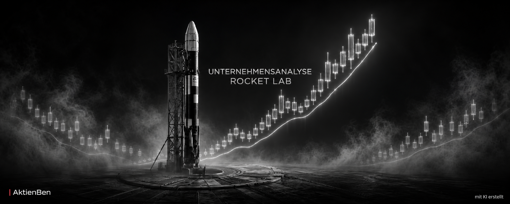
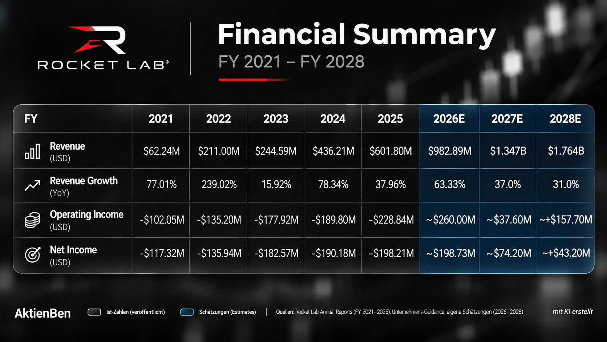
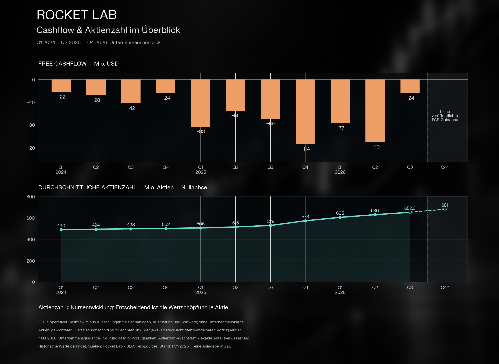

ROCKET LAB - Cashburn-Automat oder Gewinneraktie
🚀🚀🚀🚀🚀🚀🚀🚀🚀🚀🚀🚀🚀🚀🚀🚀🚀 Für $RKLB interessiere ich mich schon länger, also eigentlich seit dem die Aktie 24/25 das erste Mal so richtig durch die Decke ging. Damals zogen die Electron-Aufträge an und das Unternehmen hatte den ersten Neutron-Auftrag in der Tasche. Durch die hohe Verwässerung sehen wir jedoch bis heute große Volatilität und Unsicherheit bei den Anlegern. Hier trifft ein wahnsinns Wachstum auf eine hohe Bewertung und Verwässerung.
Historie der letzten Jahre:
- 2023–2025: Steigende Launch-Zahlen – Rocket Lab steigerte seine Startaktivität von 10 Electron-Starts in 2023 über 16 in 2024 auf 21 Starts im Jahr 2025. - Rekordjahr 2025 – Der Gesamtumsatz 2025 betrug 601,8 Mio. USD (gegenüber 436,2 Mio. USD in 2024, +38%). - Auftragsbestand Ende 2025 – Der Auftragsbestand stieg bis zum 31.12.2025 auf 1,8473 Mrd. USD, aufgeteilt in 1,3717 Mrd. USD Space Systems und 0,4756 Mrd. USD Launch Services (viele Neuverträge u.a. für die SDA Tranche-3-Konstellation und GEOST-Akquisition). - 2026 Q3 - Umsatz – Rekordquartal mit 267,8 Mio. USD Umsatz, (+73%) -> 214,8 Mio. USD Space Systems (≈80%) -> 53,1 Mio. USD Launch Services. - Auftragsbestand – Ende Q3 lag der Gesamt-Backlog bei etwa 3,573 Mrd. USD (≈+52% zum Vorquartal). Allein im Q3 kamen rund 1,0 Mrd. USD an neuen Startverträgen (Electron, HASTE, Neutron) hinzu.

Zwischenfazit:
Roket Lab wächst schnell. Es erschließt neue und internationale Märkte und baut bestehende Programme aus. Die Liste der Kunden wird länger und die Aufträge nehmen an Volumen zu. „Going forward, it also gives us a foothold into Europe, which, you know, outside the US is arguably the next biggest actionable market.“ — Peter Beck
Risiken und Chancen:
Neutron (Medium-Lift-Trägerrakete) Neutron ist Rocket Labs teilweise wiederverwendbare Trägerakete mit rund 13.000 kg Kapazität. Sie soll das Unternehmen für größere Missionen und eigene Satellitenkonstellationen unabhängiger von Fremdstarts machen. Bis Ende Q3 2026 wurden 16 Neutron-Missionen gebucht, darunter Aufträge über 515 Mio. USD im Q3. Grund für die Verzögerung waren Fertigungsprobleme an den Stage-1-Tankdomen, darunter Lufteinschlüsse. Ein Ersatzdome wurde gefertigt und getestet. Neutron bleibt damit das größte Ausführungsrisiko, da Verzögerungen Kosten erhöhen und Umsätze nach hinten schieben.
Iridium-Übernahme
- Übernahme: Rocket Lab vereinbarte im Juni 2026 die Übernahme von Iridium für 54 USD je Aktie (27 USD bar plus Aktien), entsprechend einem Unternehmenswert von rund 8 Mrd. USD. - Status: Der Abschluss ist für Mitte 2027 geplant. Im September 2026 stimmten 99,6 % der abgegebenen Aktionärsstimmen zu; regulatorische Genehmigungen stehen noch aus. - Strategie: Rocket Lab würde damit Iridiums bestehendes L-Band-Satellitennetz, Bodeninfrastruktur und Kundenbasis übernehmen und sein Geschäft um globale Satellitenkommunikationsdienste erweitern. (Cash wird erst in Zukunft verdient, bis dahin wirds erstmal teuer, wobei 3 von 8 mrd USD an liquiden Mitteln dafür bereits zur Verfügung stehen.)
Zwischenfazit:
Solange Roket Lab noch nicht wirklich eigenes Geld verdient, wird es immer auf weitere Finanzierungsspritzen angewiesen sein, um seine Projekte in diesem Ausmaß realisieren zu können. Wenn Roket Lab den Weg in die nachhaltige Profitabilität schafft, werden wir denke ich auch nochmal ganz andere Bewertungen sehen. Im aktuellen Zins -und generellen Marktumfeld sehe ich zumindest kurzfritig keine großen Renditechancen. Ich warte noch den nächsten Zinsentscheid und eventuell auch bis nächstes Jahr ab. Ich würde mir ein paar klare Aussagen zum Neutron-Thema wünschen, bevor ich investiere. Dennoch brennen mir ständig die Finger. Ich denke Rocket Lab wird sich zu einem der Hauptprofiteure im Space-Sektor entwickeln und ist für mich die beste Alternative zu SpaceX.
Free Cashflow & Verwässerung
Der free Cashflow bessert sich, das ist für mich wichtig. Sollte die Zinspolitik sich entspannen, wäre ich auch bereit in ein Unternehmen zu investieren, dass noch unprofitabel ist. Die Verwässerung hat ja in letzter Zeit nochmal gut angezogen, aber es ist Licht am Ende des Tunnels zu sehen. “Rocket Lab has completed its previously announced At-The-Market share sale (the ‘ATM Program’), raising approximately $1.944 billion in gross proceeds through the issuance of 29.3 million shares (before commissions and offering expenses).”- Rocket Lab, Pressemitteilung vom 15. September 2026 Damit ist die Kapitalerhöhung für Iridium wohl abgeschlossen. Rocket Lab schließt es zwar nicht aus, in Zukunft weiter Kapital am Markt aufzunehmen, sagt aber zumindest, dass man sich eher auf nicht-verwässernde Kapitalerhöhungen fokussiren möchte. Dennoch sind auch Aktienausgaben nicht vom Tisch.

FAZIT:
Wie schon gesagt sehe ich Rocket Lab als einen DER Profiteure des Space-Booms, welcher wohl noch ganz am Anfang steht. (bis zu 400mrd USD TAM). Deswegen werde auf früh oder lang auch nicht drum herum kommen, in Rocket Lab zu investieren. Ich kann mir jedoch vorstellen, dass sich der Aktienkurs die nächsten Monate eher zurückhaltend verhalten dürfte, was mir Zeit geben würde. Viele Prgramme liegen noch weit in der Zukunft. Derzeit gibt es soviele tolle Unternehmen zu tollen Preisen und deshalb bleibe ich erstmal an der Seitenlinie. Weil das Unternehmen aktuell noch sehr auf externe Geldzuflüsse angewiesen ist, würde ich vor allem darauf schauen, wass beim nächsten und darauffolgenden FED-Zinsentscheid gesagt wird. Zudem würde ich mir noch ein paar genauere Aussagen vom Management zum Thema Verwässerung in Zukunft wünschen, aber die aktuellen Anzeichen stehen erstmal ganz gut. Die Verwässerung dürfte kurz -bis mittelfristig nicht wieter ansteigen. Hier muss man sich die Frage stellen, wie stark man an das Unternehmen glaubt. Rocket Lab steht hat alle Kanonen Richtung Wachstum gerichtet. ABER: Wird das kommende Wachstum die aktuelle Verwässerung gerechtfertigen und dazu beitragen, dass Rocket Lab am Ende ein profitables Geschäft hat oder werden immer mehr Zuschüsse benötigt werden? „The lawyers hate me saying it, but global domination is definitely part of the plan.“ — Peter Beck Was ist deine Meinung? Schreib es gern in die Kommentare! Wenn dir meine Beiträge gefallen, freue ich mich über einen Like oder ein Abo.😊 Disclaimer: Keine Anlageberatung. Alle Inhalte dienen ausschließlich Informationszwecken. Das ist meine Recherchearbeit. Investitionen erfolgen auf eigene Verantwortung und sind mit Risiken verbunden.
Hinweis: Keine Anlageberatung. Alle Angaben sind eigenständig zu überprüfen.